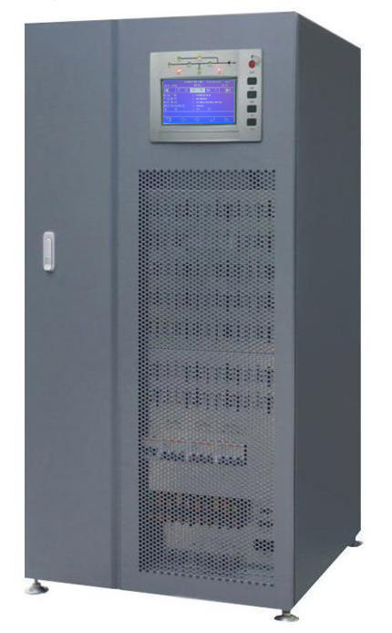
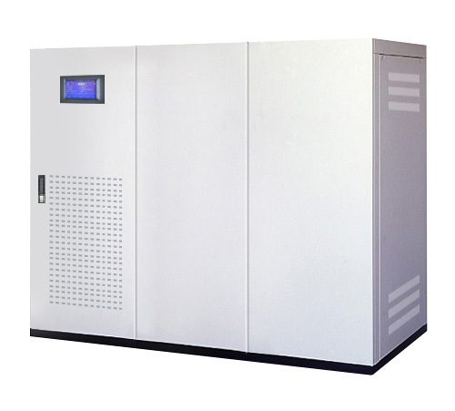

A330系列电力专用UPS
容量范围：工业级10KVA~200KVA
POWERTEK A330系列电力专用DC220V/110V UPS/逆变器产品是专为工业应用环境而设计的高效节能电源产品。该产品能在任何情况下向负载提供优质的电能，彻底消除电网瞬间中断对工业系统的影响，有效消除电网中的高频干扰，防止电网过压对负载的危害，保证关键工业流程及控制的可靠运行，主要应用于发电厂、变电站、石油天然气、石化、化工等工业领域
电力专用UPS主要特点:
1、高效节能
A、整机效率大于96％，比传统UPS电源解决方案节能5％以上。
2、低运行成本
A、系统效率高，超低的耗电量，大大降低电能费用，在工业制造的大型用电环境尤为明显。
B、电池系统免维护，且市电正常时电池处于后备工作状态，电池使用寿命更长，维护成本更低。
C、系统效率高，发热量少，运行损耗小，并降低热辐射、热污染。
3、先进的技术
A、全数字化DSP控制技术
整机的逆变控制、相位同步、输入整流控制、逻辑控制等全部DSP数字控制，控制精度高、速度快、整机综合性能好，可靠性高。
B、功率器件模块化设计
整机的功率器件，包括输入整流模块、输出逆变模块、可控硅模块等分别设计在独立的、可拔插的结构模块上，利于现场安装和维护。
C、智能电池管理技术
采用智能多模式电池管理技术，延长电池使用寿命，实现电池监控及自诊自测功能。
D、关键电路的冗余设计
电路板的工作电源采用冗余备份设计，有效提高系统运行的可靠性。
E、智能风机调速控制
根据负载大小，智能调速设计延长风机的使用寿命，降低噪音。
F、手动维护旁路设计
设计有维护旁路通道，确保机器在维修时仍然可以对负载进行不间断供电，系统可维护性高。
4、高级环境适应能力
A、具有超强的抗冲击及过载能力。
B、良好的发电机匹配，大大提高发电机的利用率。
C、工业级结构设计。
5、可管理性
A、功能齐全的LCD大液晶显示
LCD显示设计为中/英文可选式界面，方便不同用户使用，操作简便，可实时观测UPS的运行参数和运行状态，方便日常管理和维 护。
B、选配声光告警装置、智能监控软件，可实现UPS电源系统的现场和远程管理，包括近程的点对点通信监控、中距离的通信监控、远距离的网络管理监控等。
C、完善的通信保护功能，可选配干结点信号、RS232、RS485或SNMP网络适配器。
A330系列工业型UPS
A330系列工业型UPS产品采用先进的节能控制技术、数字化DSP控制、可靠的工业级功率器件、智能化多模式电池管理等技术，并可选配丰富的智能监控和电源管理软件，可大大降低电源系统运行能耗和运营成本，产品性价比高、可靠性高，本产品是工业系统用户理想的电源解决方案。
本产品广泛适用于石油、天然气、化工、水泥、煤矿、钢铁、冶金、汽车、制药、玻璃、陶瓷、食品、造纸、塑胶等工业系统中的制造加工装置、制造流程、工控设备、实验测试设备等。

A330系列（10KVA~80KVA）
◆POWERTEK A330卓越的机械电气设计，能够最大限度的保护至关重要的网络设施、安防、医疗、和工业领域的应用。逆变器经过滤波的、稳定的和调节过的正弦波连续不断的向负载供电。输入和输出EMI滤波器极大地提高了负载对市电干扰和浪涌的抵抗能力。
◆POWERTEK A330 标配PowerShield3软件，使用TeleNetGuard系统可以在全世界任何地方通过远程监控UPS状态。另外，使用电池扩展柜可以延长后备时间达数小时。
◆POWERTEK A330系列包括8-100KVA三相/单相和10-80KVA三相机型，使用双变换在线技术（VFI），配有逆变输出隔离变压器。
◆高可靠性
（1）极高的短路电流确保可以用于最严苛的场合，如照明、驱动、工业生产。标配输出隔离变压器
（2）全微处理器控制，不间断静态和手动旁路
（3）IGBT技术
◆对市电最小的冲击
输入电流畸变＜4%，转移其它用电输入或相数位移电容器设备的风险。电流畸变独立于输入参数，如电阻，这使得UPS可传送出最高水平的电能，不受环境影响。
POWERTEK A330可节省电源容量（隔离变压器或发电机组）
◆最好的电池保护
（1）温度补偿充电器
（2）深度放电保护和充电温度补偿
（3）内置自动和手动电池测试功能
◆安装简便
（1）UPS可以安装在任何配电系统中（输入整流器无需中线）
（2）分离的整流器/旁路电源网络，可分别由两个没有隔离的电源供电（无输出变压器UPS，必须隔离）
（３）可选调节输入电压和补偿由于长距离传输导致的电压下陷
◆最大可靠性和实效性
可实现多达８台并机或者Ｎ＋１冗余系统，即使是不同容量的UPS。UPS并机可以在通讯电缆一处断开的情况下仍然不间断的运行（闭合环路）
◆最低消耗
可选择的经济模式-在电网稳定的情况下使用市电，效率可达98%以上；同时保证市电故障时不间断供电
◆其他特性
（1）0.8功率因数使Powertek A330适用ICT和工业负载。
（2）自诊功能：128条大事件记录、状态、测试和报警功能，可在LCD中设置，多种语言选择。
（3）回馈保护：避免故障时能量回馈到市电。
◆先进的通讯功能
（1）兼容TeleNetGuard远程维护
（2）高级多平台通讯适合于所有的操作系统和网络环境；包括PowerShield3监控/关机软件，标准集成SNMP代理，适用于Windows95、98、NT4.0、Me、2000、2003、XP、Mac OS 9.x、X、Linux、Novell操作系统和最流行的Unix运行系统。
（3）UPS为即插即用个人电脑的连接提供通讯电缆
（4）RS232串行接口
（5）干接点
（6）EPO紧急关机接点
（7）通过远程信号切换输入到旁路
（8）远程模拟面板（LED或LCD）
（9）发电机界面：能够使由发电机供电的、可能受相移和频率变化影响的UPS非同步输出；并且更经济的使用电池充电器
◆特殊解决方案
UPS可根据您的需求配置
请与上源联系，获知更详情

A330系列（100KVA~800KVA）
◆负载的全面保护
POWERTEK A330 系列UPS采用在线双变换技术，（VFI符合IEC EN 62040-3,SS 111要求），标配逆变器隔离变压器。POWERTEK A330紧凑的构造和高质量的输出适用于重要关键负载的最终保护，包括：数据处理、电信、工业程序、安防和医疗电气设备。
◆对电源冲击小-易于供电
POWERTEK A330 解决了供电设备需加大选型的问题，改善了负载功率因数和电流畸变。采用最新的谐波抑制技术，以及先进的整流器软启动和电池充电控制技术。这些特色使Powertek A330成为发电机最好的兼容设备，和绿色环境的缔造者。
◆电池保护系统：最长潜在寿命
通常，UPS整流器对蓄电池持续充电，当市电中断时，UPS利用蓄电池继续向负载供电。为保证UPS在紧急情况下正常工作，对蓄电池的管理就是UPS至关重要的事情。电池保护系统应具备以下特点和功能以保证电池具备最优的性能和尽可能延长寿命：
1、2级充电电压，优化电池充电电流，减少电池充电时间。
2、电池充电电压温度补偿和电池深度放电保护，降低了环境对电池的影响，延长电池寿命。
3、电池浮充智能控制，减少阀控铅酸蓄电池（VRLA）的电解液消耗，延长电池寿命。
4、通过电池测试来诊断电池是否有故障。
POWERTEK A330 系列UPS还兼容其它形式的电池：开口铅酸电池，贫液/胶体阀控电池盒NiCd电池。
◆最大的可靠性和实效性
允许不同容量的UPS构成8台并联或者n+1冗余。UPS并联系统可以在通讯电缆一处断开的情况下仍然不间断运行。（闭合环路）
◆灵活性
POWERTEK A330 系列UPS能满足从IT到工业环境的所有的需求，例如Blade服务器。不减少任何有功功率，从0.8到0.9.众多附件和选件的采用，使得构成复杂的UPS系统成为可能，确保重要关键负载对最高可靠性的要求，并且能够在不间断负载的情况下新增UPS设备。
Powertek UPS同步控制器（UGS）和电源系统并接装置（PGJ）的应用，实现UPS系统的升级和冗余，达到最大程度的可靠性和实效性。
◆选件
1、UGS-UPS同步控制器
允许非并联的两台或多台UPS在供电失效情况下仍然同步。UGS能使Powertek UPS一个独立的即使不同容量的UPS同步。
2、PSJ-电源系统并接装置
通过一个电源系统并接装置可将两台UPS 构成并联，从UPS始终同主UPS系统保持同步。如果其中一台UPS出现故障，PSJ通过额外的旁路系统自动连接另一台UPS。
◆安装简便
POWERTEK A330设计紧凑，200KVA的UPS 仅占地0.64m2 。其所有重要部件均可由正面取出，UPS侧面无需维护空间。同时，上通风特性使UPS可以贴墙安装，无需UPS因需要后面通风而预留空间。
◆特殊解决方案
UPS可根据您的需求配置。
请与上源联系，获知更多详情。
◆先进的通讯功能
1、兼容TeleNetGuard远程维护
2、高级多平台通讯适合于所有的操作系统和网络环境：包括PowerShield3监控/关机软件，标准集成SNMP代理，适用于Windows 95、98、NT4.0、Me、2000、2003、XP、Mac OS 9.x、X、Linux、Novell操作系统。
3、UPS为即插即用个人电脑的连接提供通讯电缆
4、RS232双串行接口
5、市电安装插口槽；EPO紧急远程关闭UPS开关
6、发电机界面：能够使由发电机供电的、可能受相移和频率变化影响的UPS非同步输出；并且更经济的使用电池充电器。